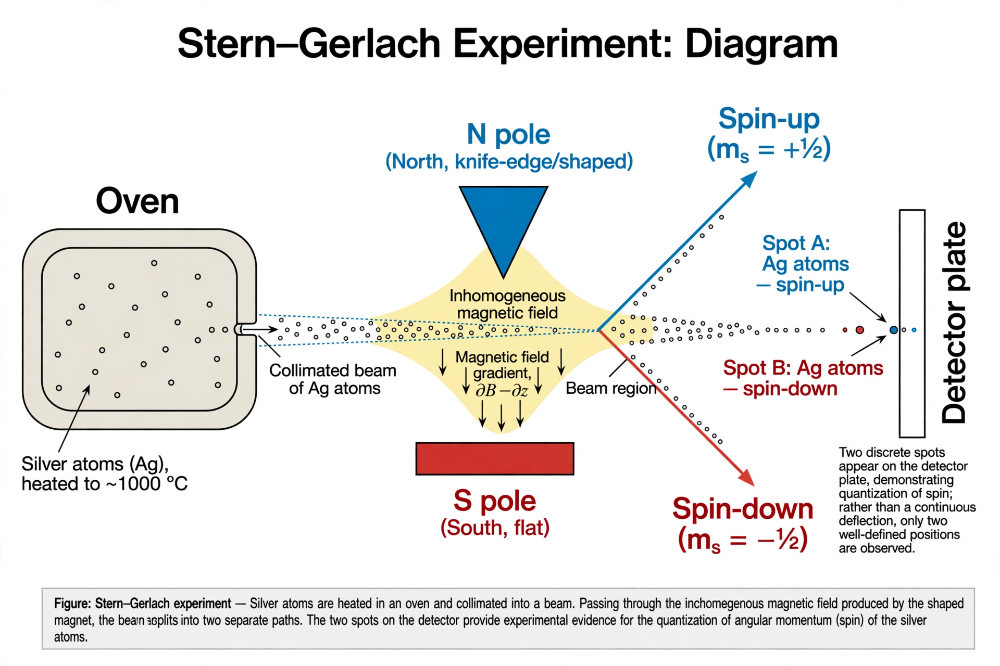

Spin (physics)

[Image: Diagram of the Stern–Gerlach experiment: a beam of atoms splitting into two paths in an inhomogeneous magnetic field]In quantum mechanics and particle physics, spin is an intrinsic form of angular momentum carried by elementary particles, and thus by composite particles such as hadrons, atomic nuclei and atoms. Spin is one of two types of angular momentum in quantum mechanics, the other being orbital angular momentum; unlike the orbital case, spin is not associated with any motion in space, but is an intrinsic property of the particle itself.
Particles are classified by spin: fermions (electrons, quarks, neutrinos) have half-integer spin (1/2, 3/2…) and obey the Pauli exclusion principle; bosons (photons, gluons, the Higgs) have integer spin and can share a quantum state. The spin–statistics theorem of Quantum field theory proves this connection from relativity and quantum mechanics. Spin was proposed in 1925 by Samuel Goudsmit and George Uhlenbeck to explain atomic spectra, and measured directly by the Stern–Gerlach experiment (1922).
Properties
Spin is quantised: measuring the spin of an electron along any axis yields only +ħ/2 or −ħ/2 ('up' or 'down'), yet the total spin magnitude is √(3)/2 ħ. Spin states of two-valued particles (qubits) are the basic units of Quantum computing. The electron's spin magnetic moment, with g-factor ≈ 2, underlies ferromagnetism when spins align in materials, nuclear magnetic resonance and its medical descendant MRI, and spintronics.
History
The idea emerged from attempts to explain fine structure and the anomalous Zeeman effect: Wolfgang Pauli introduced a 'two-valuedness' in 1924–25 and his exclusion principle; Ralph Kronig, then Goudsmit and Uhlenbeck (1925), proposed literal electron rotation — 'spin' — an image Pauli initially resisted because a classical spinning electron would exceed the speed of light at its surface. Dirac's relativistic equation (1928) derived spin 1/2 automatically, resolving the puzzle: spin is a relativistic quantum property with no classical counterpart.